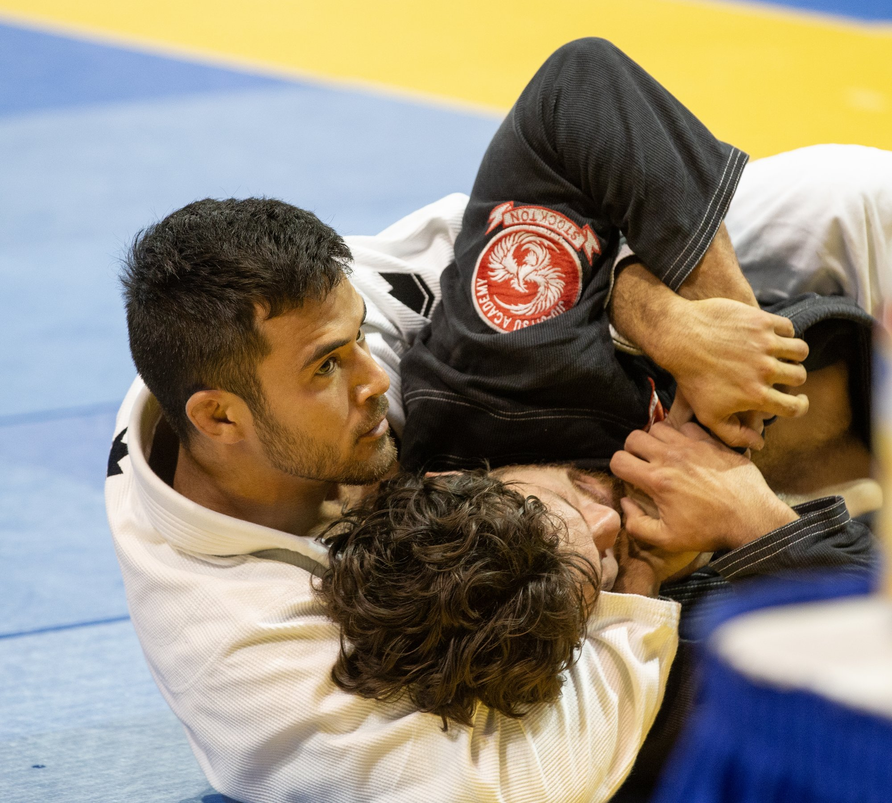
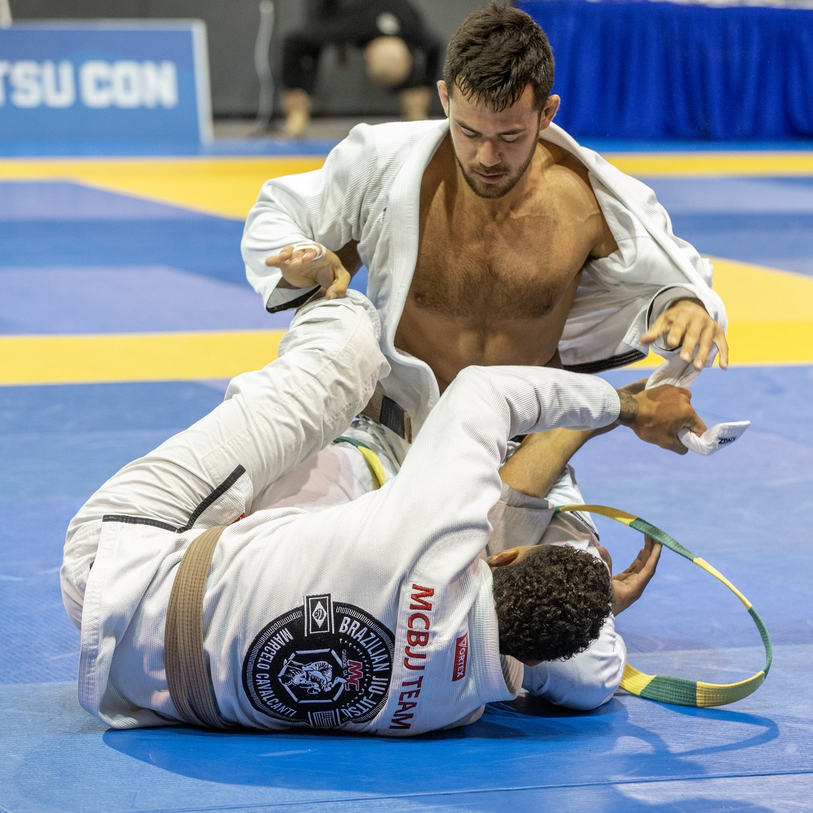
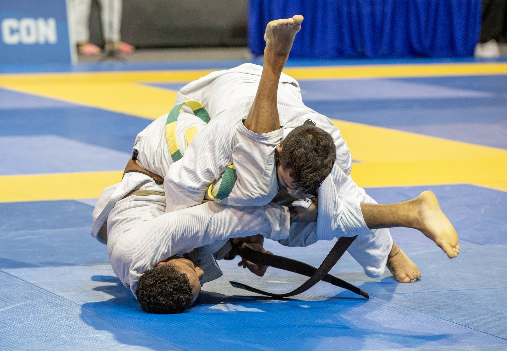
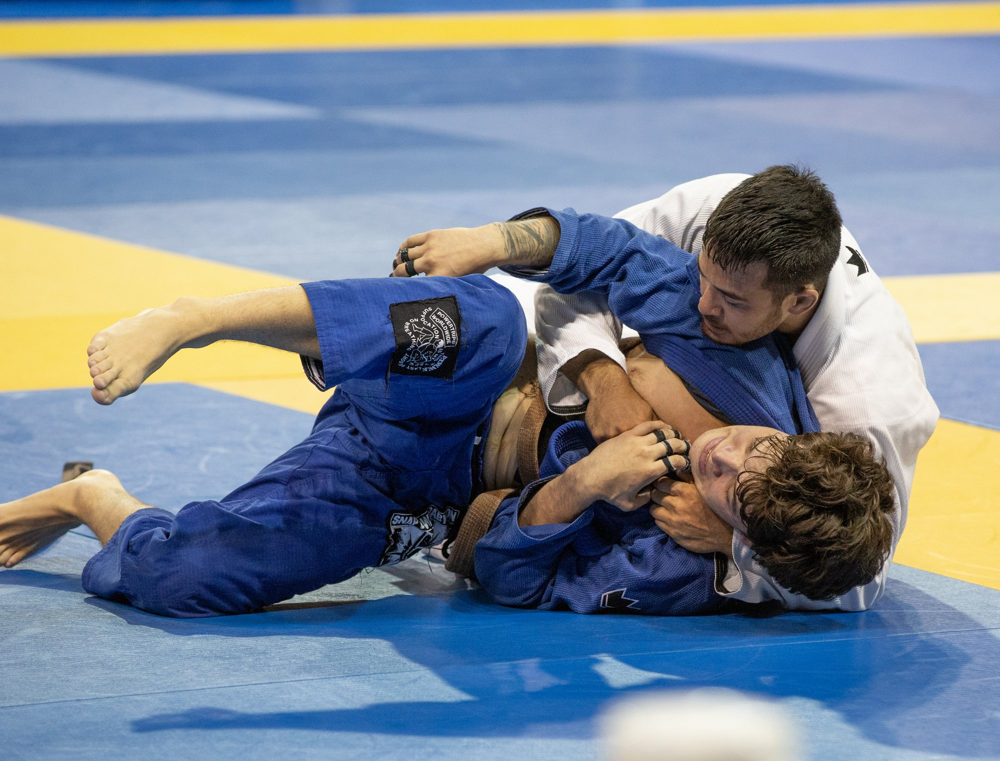
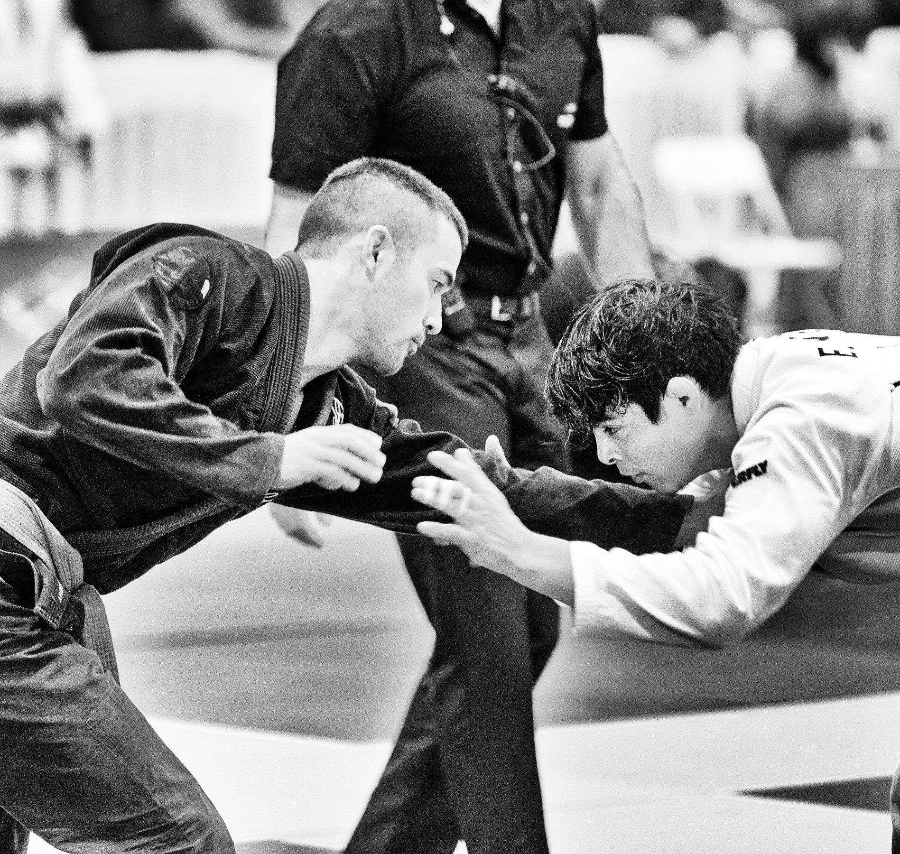
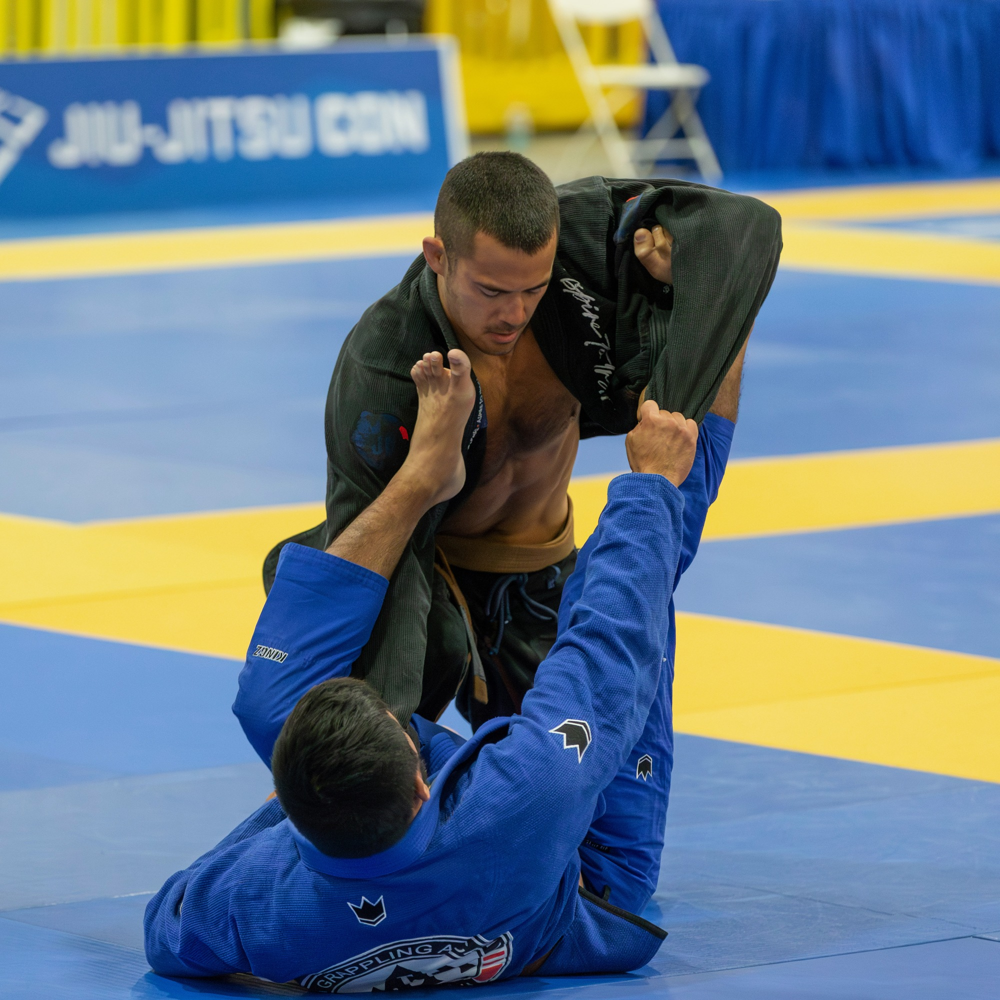

I started Jiu Jitsu at eighteen at Stanford Club BJJ under Kevin Kopecky and Gene Folgo. I received my blue belt from Kevin in 2018 or 2019. I also received some instruction from Mark Tse. I spent periods of time training at 50/Fifty, de Been Jiu Jitsu, El Nino Training Center, Samurai BJJ, and Phuket Top Team (and Sunday Koffee Krew).
I spent a year training with Romulo Melo in San Francisco. I received my purple belt from Romulo in 2021.
I started training at JG Los Altos under Sang Mercado, my present coach. I received my brown belt in 2023. I've been lucky to train with several great black belts in our association: Javier Gomez, Marco Mendes, Minas Nalbandian, and Hector Perea.
This past year I've been traveling and dropping in at different gyms, although I'm still affiliated with JG Los Altos. I've had the good fortune of being welcomed in and around San Francisco, including Black Sheep, Empire, Ralf Gracie Berkeley, Bay, Charles Gracie Richmond, and Cave Academy. This year I've been lucky enough to briefly train with Jozef Chen in Shanghai and catch rolls with Jackson Ngai and Mica Galvao - a huge honor.
Jiu Jitsu has been a practice, art, and community for the last ten years of my life. I'm incredibly grateful for the martials arts discipline. I also owe a lot to my kung fu teacher Doug Moffett, who taught me from ages 6 to 18 and built a mental and physical foundation I still lean on heavily today. I write about Jiu Jitsu sometimes here.
Santa Cruz International Open — Adult Gi Brown Belt Middleweight
1st place




San Jose International Open — Adult Gi Brown Belt Middleweight
1st place

